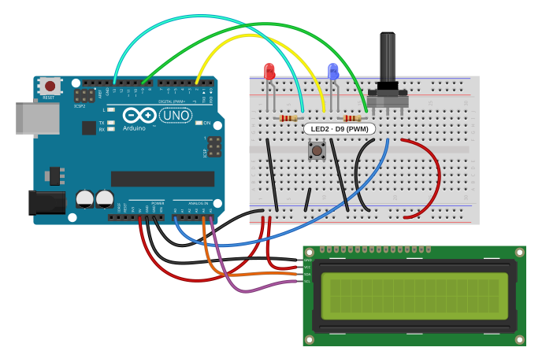
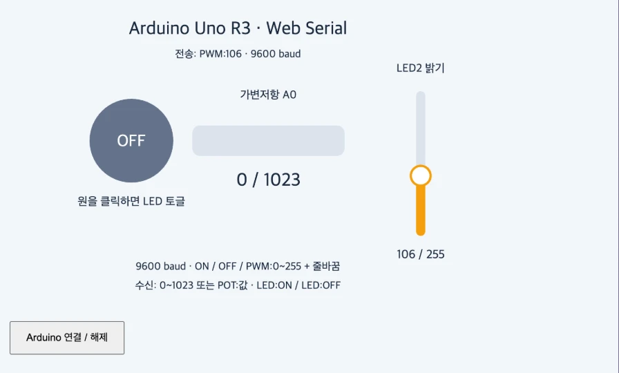

01과제
미션
p5의 슬라이더를 활용해 아두이노에 연결된 LED의 밝기를 조절한다.
결과 요약
- p5 화면 오른쪽에 세로 슬라이더(0~255)를 그렸다.
- 값이 바뀔 때만
PWM:값을 보내고, 앞 전송이 끝나기 전에 바뀐 값은 최신 값 하나만 보낸다. - Arduino는
analogWrite(9, 값)으로 LED2 밝기를 바꾼다. - 실제 Arduino Uno에서 슬라이더로 밝기가 바뀌는 것을 확인했다.
02출발점: 수업 예제
수업 예제에서 브라우저(p5.js)와 Arduino는 USB 시리얼로 텍스트를 한 줄씩 주고받는다. 속도는 양쪽 모두 9600 baud이고, 메시지 하나는 끝에 줄바꿈(\n)이 붙은 한 줄이다. 포트를 열고 줄 단위로 읽고 쓰는 일은 수업에서 받은 serial-helper.js(SerialHelper 클래스)가 맡고, sketch.js는 화면과 메시지만 다룬다. 이 파일은 수정하지 않았다.
| 방향 | 메시지 | 뜻 | |
|---|---|---|---|
| 웹 → Arduino | ON / OFF | LED1(D13) 켜기 / 끄기 | 수업 예제 |
| Arduino → 웹 | POT:0~POT:1023 | 가변저항(A0) 값 | 수업 예제 |
| Arduino → 웹 | LED:ON / LED:OFF | LED1 상태 확인 | 수업 예제 |
| 웹 → Arduino | PWM:0~PWM:255 | LED2(D9) 밝기 | 이번에 추가 |
03설계
1. 메시지는 PWM:값 한 줄
기존 규칙(텍스트 한 줄)을 그대로 따랐다. 앞에 PWM:을 붙여 ON/OFF 명령과 섞이지 않게 했다. 슬라이더 범위를 analogWrite()의 범위와 같은 0~255로 잡아서, Arduino 쪽에서 따로 바꿔 계산할 필요가 없다.
2. LED2는 D9
Uno에서 밝기를 조절할 수 있는(PWM) 핀은 3, 5, 6, 9, 10, 11번(보드에 ~ 표시)이다. D13은 PWM이 안 되므로 새 LED는 D9에 달았다. D9의 PWM 주파수는 약 490 Hz다.
3. 값이 바뀔 때만 보낸다
슬라이더를 끄는 동안 mouseDragged()는 계속 불리지만, 반올림한 값이 마지막으로 보낸 값과 같으면 보내지 않는다(lastSent).
4. 전송은 한 번에 하나, 밀린 값은 최신 값만
Web Serial은 앞 전송이 끝나기 전에 다시 쓰려고 하면 오류가 날 수 있다. 그래서 sendPWM()은 전송 중이면 값만 pendingPWM에 덮어 두고, 앞 전송이 끝나면 그 최신 값 하나만 보낸다. 중간 값은 버려도 되지만 마지막 값은 꼭 도착한다.
04브라우저 시뮬레이션
Arduino 없이 동작을 볼 수 있게 만들었다. 슬라이더를 움직이면 보낼 메시지가 쌓이고, D9의 PWM 파형과 LED 밝기가 바뀐다. 한 메시지(예: PWM:128\n, 8바이트)는 9600 baud에서 약 8.3 ms 걸린다고 보고 전송을 흉내 냈다.
p5 슬라이더 → Web Serial → D9 PWM
실제 포트에 연결하지 않는 시뮬레이션
D9 파형 · 한 주기 약 2.04 ms(490 Hz) · 켜진 비율 0%
'대기열 없이 매번 바로 보내기'를 켜고 슬라이더를 빠르게 끌면, 앞 전송이 끝나기 전에 다음 전송이 시작되는 '겹친 전송'이 생긴다. 실제 Web Serial에서는 이때 쓰기 잠금 오류가 난다. 끄면(스케치와 같은 방식) 겹침은 0이고 마지막 값은 항상 보내진다.
05회로와 연결도
수업 회로(LED1·버튼·가변저항·I2C LCD)는 그대로 두고 LED2 하나와 220 Ω 저항을 더했다. D9 → 220 Ω → LED2 긴 다리(+), 짧은 다리(−) → GND 레일이다. LED1과 같은 모양으로 꽂았다.



핀 연결
| Arduino | 연결 | 이번 스케치 |
|---|---|---|
| D9 (~) | 220 Ω → LED2(+), LED2(−) → GND | 추가, PWM |
| D13 | 220 Ω → LED1(빨강)(+), (−) → GND | ON / OFF |
| A0 | 가변저항 가운데 다리 (양 끝 5V·GND) | POT: 보고 |
| D2 | 버튼 → GND | 수업 회로, 사용 안 함 |
| A4 / A5 | LCD SDA / SCL | 수업 회로, 사용 안 함 |
| 5V / GND | 브레드보드 전원 레일, LCD 전원 |
준비물
- 수업 회로(Arduino Uno, LED1, 버튼, 가변저항, I2C LCD)
- LED 1개, 220 Ω 저항 1개, 점퍼선 2개 추가
- Chrome 또는 Edge (Web Serial을 지원하는 브라우저)
LED는 긴 다리가 +(애노드)다. 반대로 꽂으면 슬라이더를 올려도 켜지지 않는다. 220 Ω이면 5V에서 LED 전류가 약 13 mA(빨강·노랑 LED 기준)로, Uno 핀 한 개의 권장 한도(20 mA) 안이다.
06코드
웹은 수업 예제의 sketch.js에 슬라이더 부분(drawSlider(), updateSlider(), sendPWM())과 마우스 처리를 더했다. index.html과 serial-helper.js는 수업 예제 그대로다. Arduino는 LED1·LED2·가변저항만 다루는 짧은 스케치로 새로 썼다.
// 복잡한 통신은 serial-helper.js가 처리합니다.
let serial, connectButton;
let ledOn = false;
let potValue = 0;
let statusText = 'Arduino를 연결해 주세요.';
// LED2 (D9 PWM) 밝기 슬라이더
let led2Value = 0; // 0~255
let draggingSlider = false;
let lastSent = -1;
let sending = false; // 전송 중복 방지
let pendingPWM = null; // 전송 중에 바뀐 최신 값
const SL = { x: 540, top: 110, bottom: 300 }; // 수직 슬라이더 위치
function setup() {
createCanvas(600, 400);
textFont('sans-serif');
serial = new SerialHelper(9600, receiveLine, message => statusText = message);
connectButton = createButton('Arduino 연결 / 해제');
connectButton.mousePressed(() => serial.toggle());
}
function draw() {
background(242, 246, 250);
fill(25, 40, 60); noStroke(); textAlign(CENTER);
textSize(24); text('Arduino Uno R3 · Web Serial', width / 2, 36);
textSize(14); text(statusText, width / 2, 66);
// LED1 (D13) 토글 버튼
fill(ledOn ? '#22c55e' : '#64748b');
circle(160, 175, 110);
fill(255); textSize(22); text(ledOn ? 'ON' : 'OFF', 160, 183);
fill(25, 40, 60); textSize(15); text('원을 클릭하면 LED 토글', 160, 260);
// 가변저항 A0 막대
text('가변저항 A0', 340, 120);
fill('#dbe3ed'); rect(240, 155, 200, 40, 10);
fill('#3b82f6'); rect(240, 155, map(potValue, 0, 1023, 0, 200), 40, 10);
fill(25, 40, 60); textSize(24); text(potValue + ' / 1023', 340, 235);
// LED2 (D9) 수직 슬라이더
drawSlider();
fill(25, 40, 60); textSize(14);
text('9600 baud · ON / OFF / PWM:0~255 + 줄바꿈', 300, 345);
text('수신: 0~1023 또는 POT:값 · LED:ON / LED:OFF', 300, 370);
}
function drawSlider() {
fill(25, 40, 60); textSize(15); textAlign(CENTER);
text('LED2 밝기', SL.x, SL.top - 25);
// 트랙
fill('#dbe3ed'); rect(SL.x - 6, SL.top, 12, SL.bottom - SL.top, 6);
// 채워진 부분 + 손잡이
const hy = map(led2Value, 0, 255, SL.bottom, SL.top);
fill('#f59e0b'); rect(SL.x - 6, hy, 12, SL.bottom - hy, 6);
fill(255); stroke('#f59e0b'); strokeWeight(3);
circle(SL.x, hy, 26);
noStroke();
// 값 표시
fill(25, 40, 60); textSize(16);
text(led2Value + ' / 255', SL.x, SL.bottom + 30);
}
async function mousePressed() {
// 슬라이더 영역 클릭 → 드래그 시작
if (abs(mouseX - SL.x) < 20 && mouseY > SL.top - 15 && mouseY < SL.bottom + 15) {
draggingSlider = true;
updateSlider();
return;
}
// LED1 원 클릭 → 토글
if (dist(mouseX, mouseY, 160, 175) > 55) return;
const next = !ledOn;
if (await serial.send(next ? 'ON' : 'OFF')) ledOn = next;
}
function mouseDragged() {
if (draggingSlider) updateSlider();
}
function mouseReleased() {
draggingSlider = false;
}
function updateSlider() {
const y = constrain(mouseY, SL.top, SL.bottom);
led2Value = round(map(y, SL.bottom, SL.top, 0, 255));
if (led2Value !== lastSent) {
lastSent = led2Value;
sendPWM(led2Value); // 값이 바뀔 때만 전송
}
}
// 드래그 중 전송이 겹치지 않도록 하나씩 보내고, 밀린 값은 최신 값만 보냅니다.
async function sendPWM(value) {
pendingPWM = value;
if (sending) return;
sending = true;
while (pendingPWM !== null) {
const v = pendingPWM;
pendingPWM = null;
await serial.send('PWM:' + v);
}
sending = false;
}
function receiveLine(line) {
// Arduino가 보내는 한 줄을 화면에 반영합니다.
const message = line.trim().toUpperCase();
if (message === 'LED:ON' || message === 'ON') ledOn = true;
else if (message === 'LED:OFF' || message === 'OFF') ledOn = false;
else {
const match = message.match(/^(?:POT\s*[:=]\s*)?(\d+)$/);
if (match) potValue = constrain(Number(match[1]), 0, 1023);
}
}// p5.js sketch.js와 짝을 이루는 최소 테스트 스케치
// 수신: ON / OFF / PWM:0~255 (줄바꿈 포함)
// 송신: POT:0~1023
const int LED1_PIN = 13; // 토글 LED
const int LED2_PIN = 9; // 밝기 조절 LED (PWM)
const int POT_PIN = A0;
int lastPot = -1;
unsigned long lastPotTime = 0;
void setup() {
Serial.begin(9600);
Serial.setTimeout(50); // readStringUntil 대기 시간 단축
pinMode(LED1_PIN, OUTPUT);
pinMode(LED2_PIN, OUTPUT);
analogWrite(LED2_PIN, 0);
}
void loop() {
// 1) 웹에서 온 명령 처리
if (Serial.available()) {
String line = Serial.readStringUntil('\n');
line.trim();
line.toUpperCase();
if (line.startsWith("PWM:")) {
int v = constrain(line.substring(4).toInt(), 0, 255);
analogWrite(LED2_PIN, v);
} else if (line == "ON") {
digitalWrite(LED1_PIN, HIGH);
Serial.println("LED:ON");
} else if (line == "OFF") {
digitalWrite(LED1_PIN, LOW);
Serial.println("LED:OFF");
}
}
// 2) 가변저항 값이 바뀌면 100ms마다 전송
if (millis() - lastPotTime > 100) {
lastPotTime = millis();
int pot = analogRead(POT_PIN);
if (abs(pot - lastPot) > 2) {
lastPot = pot;
Serial.print("POT:");
Serial.println(pot);
}
}
}07동작 원리
1. 마우스 위치 → 0~255
updateSlider()가 마우스 y좌표를 슬라이더 위(110)~아래(300) 사이로 묶고, map()으로 아래 0 ~ 위 255로 바꾼 뒤 반올림한다.
2. 바뀐 값만 대기열로
값이 lastSent와 다를 때만 sendPWM(값)을 부른다. sendPWM()은 전송 중이면 pendingPWM만 고치고 돌아간다. 전송을 맡은 쪽은 while로 남은 최신 값이 없을 때까지 하나씩 await serial.send('PWM:' + 값)을 한다.
3. Arduino가 한 줄을 읽는다
Serial.readStringUntil('\n')으로 한 줄을 읽고 trim()(앞뒤 공백·\r 제거), toUpperCase()를 한다. PWM:으로 시작하면 다섯째 글자부터를 숫자로 바꾸고 constrain()으로 0~255에 가둔다.
4. PWM으로 밝기를 만든다
analogWrite(9, 값)은 D9를 약 490 Hz로 켰다 껐다 하면서, 한 주기 중 켜진 시간의 비율을 값/255로 맞춘다. 눈은 이 빠른 깜빡임을 평균 밝기로 느낀다. 128이면 절반 정도 켜져 있다.
08검증
실제 Arduino Uno에서 동작
스케치를 Uno에 올리고 Chrome 계열 브라우저에서 p5 페이지를 Web Serial로 연결했다. 슬라이더를 움직이면 D9의 LED2 밝기가 따라 바뀌었다(09의 영상). 3.3V에 LED2를 직접 연결해 LED와 배선이 정상인 것도 먼저 확인했다.
Arduino Uno 컴파일
Arduino IDE의 arduino-cli(AVR 코어 1.8.8)로 Uno 대상 컴파일에 성공했다. 프로그램 저장 공간 4,920바이트(15%), 전역 변수 228바이트(11%)다.
PC에서 Arduino 스케치에 메시지 넣어 보기
스케치를 PC에서 그대로 컴파일하고, 시리얼 입력·String·핀 출력만 흉내 낸 코드로 바꿔 여러 줄을 넣어 봤다. 실제 사용 중에는 나오기 어려운 입력도 일부러 넣었다.
| 넣은 메시지 | 결과 | 판정 |
|---|---|---|
PWM:128 | D9 = 128 | 통과 |
pwm:300 | 대문자로 바뀌고 255로 제한 | 통과 |
PWM:-5 | 0으로 제한 | 통과 |
␣ON␣\r | 공백과 \r을 지우고 D13 켜기, LED:ON 응답 | 통과 |
OFF | D13 끄기, LED:OFF 응답 | 통과 |
PWM:abc | 숫자가 아니면 0 → LED2 꺼짐(고찰 5) | 통과 |
PWM:1~PWM:40 40줄을 한꺼번에 | 한 줄씩 처리되어 마지막 값 40 | 통과 |
| 가변저항 500 → 502 → 503 | POT:500, 2 차이는 무시, POT:503 | 통과 |
PC에서 슬라이더를 빠르게 끌어 보기
sketch.js를 Node.js에서 그대로 실행했다. 전송 한 번이 8.3 ms 걸리는 가짜 포트를 붙이고, 슬라이더를 아래 끝에서 위 끝까지 1픽셀씩 빠르게 끌었다. 전송을 그때그때 바로 하는 방식과 비교했다.
| 보내는 방식 | 값이 바뀐 횟수 | 보낸 메시지 | 겹친 전송 | 마지막으로 보낸 값 |
|---|---|---|---|---|
| 바뀔 때마다 바로 보내기 | 191 | 191 | 190 | PWM:255 |
sendPWM() (최신 값만, 이 과제) | 191 | 55 | 0 | PWM:255 |
검사 코드: tools/p5sim (ino_test.cpp, queue_test.mjs)
09실제 동작

실제 동작 영상과 화면은 촬영 후 이 자리에 올린다.
10고찰
1. 수업 스케치에 슬라이더만 붙이면 안 된 이유
처음에는 수업 Arduino 스케치를 그대로 둔 채 웹에서 PWM:을 보냈는데 LED2가 켜지지 않았다. 수업 스케치의 명령 처리(슬라이드 14)는 받은 줄이 ON이나 OFF인지만 비교하고, 그 밖의 줄은 잘못된 명령으로 버린다. 그래서 Arduino 쪽에 PWM: 처리를 새로 넣어야 했다. 수업 스케치에 합칠 때는 두 가지를 더 챙겨야 한다.
- 명령 상자 크기: 명령을 모으는 칸이 8칸(글자 7개까지)이다.
PWM:255가 정확히 7글자라 겨우 들어간다. - 확인 간격: 시리얼 확인이 500 ms마다 한 번이다. 9600 baud에서는 1초에 약 960바이트가 들어올 수 있다. 500 ms면 최대 480바이트인데, Uno의 수신 버퍼는 64바이트다. 슬라이더를 오래 끌면 버퍼가 넘쳐 메시지가 깨질 수 있고, 반응도 최대 0.5초 늦다. 확인 간격을 10 ms 정도로 줄여야 한다.
이번 스케치는 loop()가 돌 때마다 확인하므로 두 문제가 없다.
2. 보내는 속도의 한계
PWM:255\n은 8바이트이고, 9600 baud에서 1바이트는 시작·정지 비트를 포함해 10비트다. 그래서 메시지 하나에 약 8.3 ms, 1초에 약 120개가 최대다. p5의 draw()는 1초에 약 60번 돌지만 mouseDragged()는 마우스가 움직일 때마다 불리므로, 빠르게 끌면 보내는 속도보다 값이 더 빨리 바뀐다. '최신 값만 보내기'는 이 차이를 중간 값을 버리는 방식으로 메운다. LED 밝기는 마지막 값만 중요하므로 중간 값을 버려도 손해가 없다.
3. 숫자와 눈에 보이는 밝기는 비례하지 않는다
analogWrite() 값은 켜진 시간에 비례한다. 하지만 사람 눈은 어두운 쪽 변화에 민감하고 밝은 쪽 변화에는 둔하다. 그래서 0~50 사이에서는 밝기가 크게 바뀌고, 200~255 사이는 거의 같아 보인다. 슬라이더 위치와 느끼는 밝기를 맞추려면 보내기 전에 감마 보정을 할 수 있다(예: 값 = round(255 × (위치/255)2.2)). 이번 과제에서는 값과 PWM이 바로 대응하는 편이 설명하기 쉬워 적용하지 않았다.
4. D9를 쓸 때 주의할 점
D9와 D10의 PWM은 Timer1을 쓴다. Servo 라이브러리도 Timer1을 쓰므로, 서보를 함께 쓰면 D9·D10의 analogWrite()가 동작하지 않는다. 그때는 LED2를 D5나 D6으로 옮긴다. 또, Arduino IDE의 시리얼 모니터가 열려 있으면 포트를 차지해서 브라우저가 연결되지 않는다.
5. 잘못된 입력
PWM:abc처럼 숫자가 아닌 값이 오면 toInt()가 0을 돌려주어 LED2가 꺼진다. 웹은 항상 0~255 숫자만 보내므로 지금은 문제가 없다. 다른 프로그램이나 시리얼 모니터에서 손으로 보낼 수도 있다면, 숫자가 맞는지 확인한 뒤에만 반영하는 편이 안전하다.